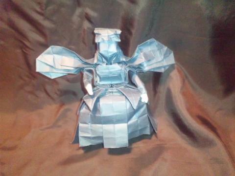
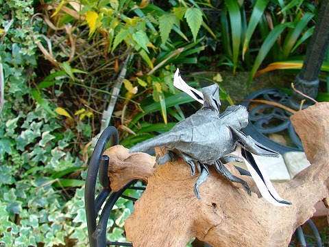
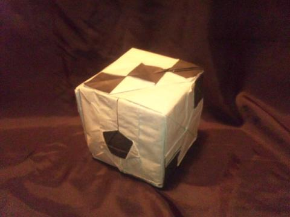

<body background="http://blog-imgs-32.fc2.com/i/k/i/ikinukinoorigami/p10-1.jpg"></body>


企画１
<br><br><br>
<center><strong><FONT size="7">「息抜きの折り紙」作品ランキング！</font>
<br><br>
息抜きの折り紙の数ある作品の中でも、特に人気の高いものをランキング形式で載せています。（毎月更新）
<br><br><br>
<br><br><br>
<br><br><br>
<br><br><br>
<FONT size="6">第３位！</font>
<br><br><br>

<br /><br>
作品名：ダークエンジェル<br />
創作者：pili<br />
使用紙：普通紙　紺　50cm<br />
体全長：20cm<br />
作時間：１週間<br />
難易度：★★★☆☆<br />
展開図：後述<br />
<br>
<a href="http://ikinukinoorigami.blog88.fc2.com/blog-entry-97.html" target="_blank" title="元記事">元記事</a>
<br><br><br>
第３位は「ダークエンジェル」でした。<br>
やはり、「これ創作なの！？」と驚かれている方が多く、その人たちが票を入れてくれたからでしょうか。<br>
私の創作作品が入着するとは、嬉しい限りです。
<br><br><br>
<br><br><br>
<br><br><br>
<br><br><br>
<FONT size="6">第２位！</font>
<br><br><br>

<br><br>

作品名：ヘラクレスオオカブト<br>
創作者：神谷　哲史<br>
使用紙：和紙＋カラペ<br>
体全長：30cm<br>
作時間：３時間<br>
折り図：折紙探偵団63号<br><br>

<a href="http://ikinukinoorigami.blog88.fc2.com/blog-entry-45.html" target="_blank" title="元記事">元記事</a>
<br><br><br>
第２位は「ヘラクレスオオカブト」でした。<br>
以前、ブログのTOP画を飾っていた事もあり、それが皆さんの印象に残ったのでしょうか。<br>
背景にこだわった作品です！
<br><br><br>
<br><br><br>
<br><br><br>
<br><br><br>
<FONT size="6">そして、第１位！！</font>
<br><br><br>

<br /><br>
作品名：ダイス<br />
創作者：田中将司<br />
使用紙：普通紙黒＋カラペ白　109cm(四六判２枚より)<br />
体全長：12cm<br />
作時間：３日<br />
難易度：★★★★☆<br />
展開図：折紙探偵団第65号<br><br>

<a href="http://ikinukinoorigami.blog88.fc2.com/blog-entry-99.html" target="_blank" title="元記事">元記事</a>
<br><br><br>
第１位は「ダイス」でした！<br>
「たった紙一枚で６つの目が折り出せるの！」と皆さんも驚きの様子。<br>
正直、私も初めて見たときはビックリしました。<br>
私もイチオシの作品が堂々の第１位でした。<br>
<br><br><br>
作品ランキングはこれで終わりです。<br>
ギャラリーではこのように様々な企画をやっていこうと思うので、良いアイデアがある方は是非<a href="http://ikinukinoorigami.blog88.fc2.com/blog-entry-126.html" target="_blank" title="元記事">コチラ</a>にコメントください！<br><br><br>

それでは、さよ〜なら〜！<br><br><br><br><br>


</strong></center>